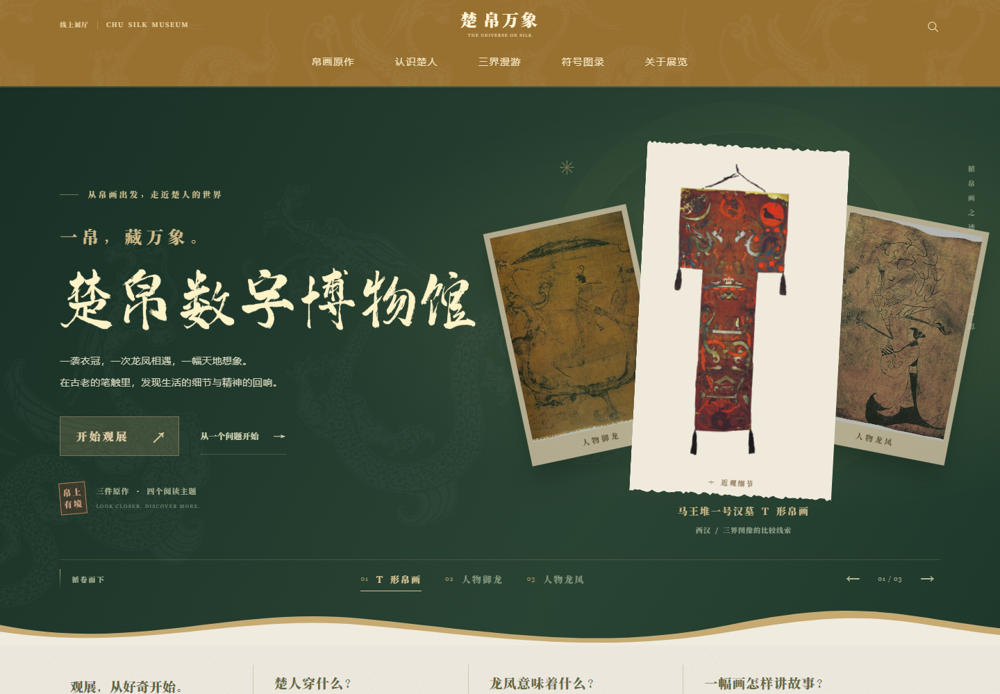
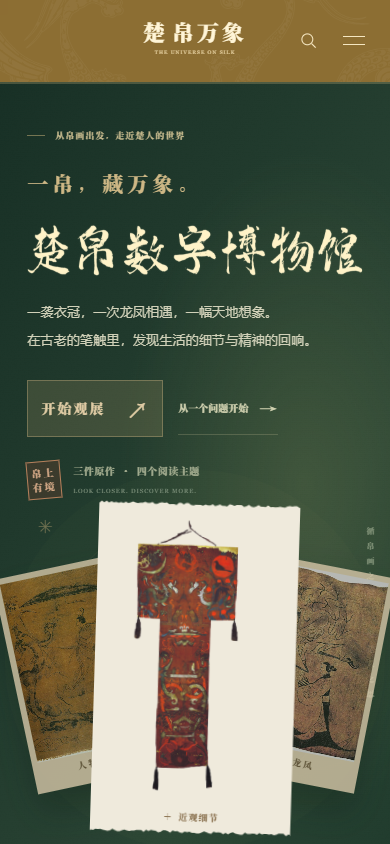

楚帛数字博物馆 / 网站展示
一帛，见
天地万象。
以帛画为入口，走近楚人的衣冠、礼序与龙凤想象。连接原作细读与原创图形，让古老图像成为可以观看、阅读和探索的文化体验。
进入网站艺术设计毕业创作 · 视觉传达设计


真实网页预览 / 电脑与手机均可浏览
近观帛画原作
观看人物御龙、人物龙凤与 T 形帛画，放大阅读笔触、形态与构图。
02读见楚人生活
从衣冠、器物、龙凤和民俗图式四个主题，带着问题认识画中世界。
03循象漫游三界
进入天上、人间、地下，探索十三组原创图形，支持筛选、细读与下载。
以战国楚帛画为起点，将西汉 T 形帛画作为比较线索；孔雀青图形为当代设计提取。
扫码进入
完整网站SCAN TO EXPLORE